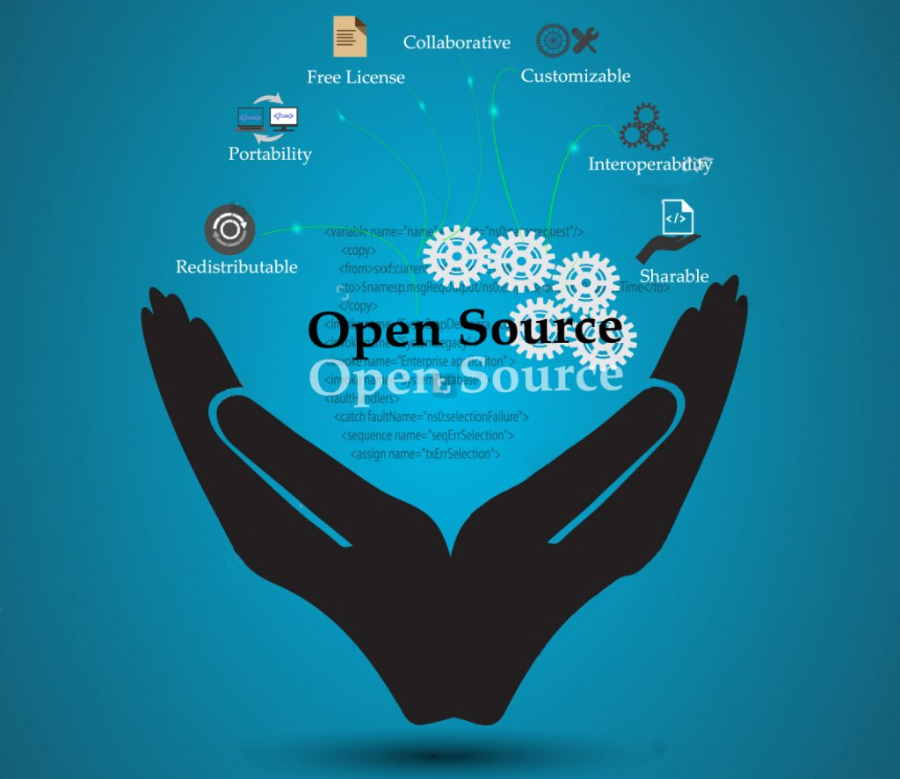

Embarking on the journey of web application development in this course has not only equipped us with the technical skills required for this specific domain but has also provided a profound understanding of fundamental software engineering concepts. Beyond the surface-level proficiency in web development, the curriculum has delved into critical principles that have broad implications across various sectors of software engineering. This essay will expound upon my learning experiences regarding Open Source Software Development, Agile Project Management, and Design Patterns, shedding light on their enduring significance beyond the immediate scope of web application development.
Open Source Software Development is often perceived as a niche skill focused solely on contributing to communal projects. However, its fundamental principles extend far beyond the borders of web application development. At its core, open source emphasizes collaboration, transparency, and the collective pursuit of knowledge. These principles can be seamlessly applied to a myriad of domains, from developing intricate embedded systems to creating innovative mobile applications. The ethos of open source fosters an environment of shared learning, where peer collaboration transcends the boundaries of specific technologies and accelerates progress across diverse software engineering landscapes.
While the course introduced us to the overarching philosophy of Agile Project Management, a specific methodology highlighted was Issue Driven Project Management. This style, rooted in Agile principles, revolves around the identification and resolution of specific issues throughout the development process. Its adaptability and iterative nature make it a versatile approach applicable to projects far beyond web applications. Whether undertaking software development, hardware projects, or non-technical initiatives, the core tenets of Issue Driven Project Management ensure continual reassessment, refinement, and an unwavering focus on problem-solving. Personally, I can envision utilizing this methodology in research projects, where addressing specific challenges in a systematic and iterative manner is crucial for success.
Design Patterns, the reusable solutions to common software design problems, constitute a universal language within the realm of software engineering. Their significance transcends the narrow confines of web development, extending their influence to desktop applications, mobile apps, and even embedded systems. Design Patterns enhance code readability, scalability, and maintainability, forming an indispensable toolkit for engineers. Explicitly defining terms like design patterns becomes paramount, as it establishes a shared vocabulary within the software engineering community. This shared understanding is vital for effective communication, collaboration, and problem-solving, regardless of the specific technology stack or application domain.
In conclusion, this course has been a comprehensive exploration not only into the intricacies of web application development but also into the broader tapestry of software engineering. Open Source Software Development, Agile Project Management (with a focus on Issue Driven Project Management), and Design Patterns are emblematic of the foundational concepts that resonate across the spectrum of software engineering disciplines. The skills acquired in this course transcend the boundaries of technology stacks, serving as a versatile toolkit for addressing challenges, fostering collaboration, and creating resilient solutions in the dynamic landscape of software engineering. Armed with this holistic understanding, I am poised not just as a web developer but as a well-rounded software engineer ready to navigate the multifaceted challenges of the ever-evolving technological landscape.